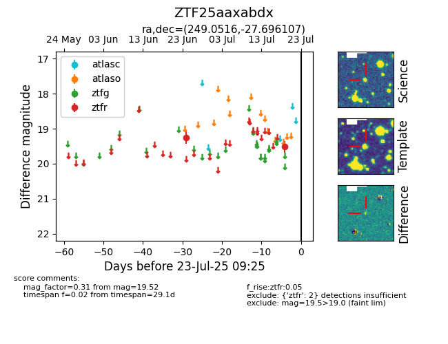

Target ZTF25aaxabdx at 2025-07-23 11:48, see:
FINK: fink-portal.org/ZTF25aaxabdx
Lasair: lasair-ztf.lsst.ac.uk/objects/ZTF25aaxabdx
ALeRCE: alerce.online/object/ZTF25aaxabdx
alt names
ZTF25aaxabdx (ztf,fink)
coordinates:
equatorial (ra, dec) = (249.0516,-27.69611)
galactic (l, b) = (351.9872,+13.09277)
photometry
last ztfr=19.52
2 ztfr detections
